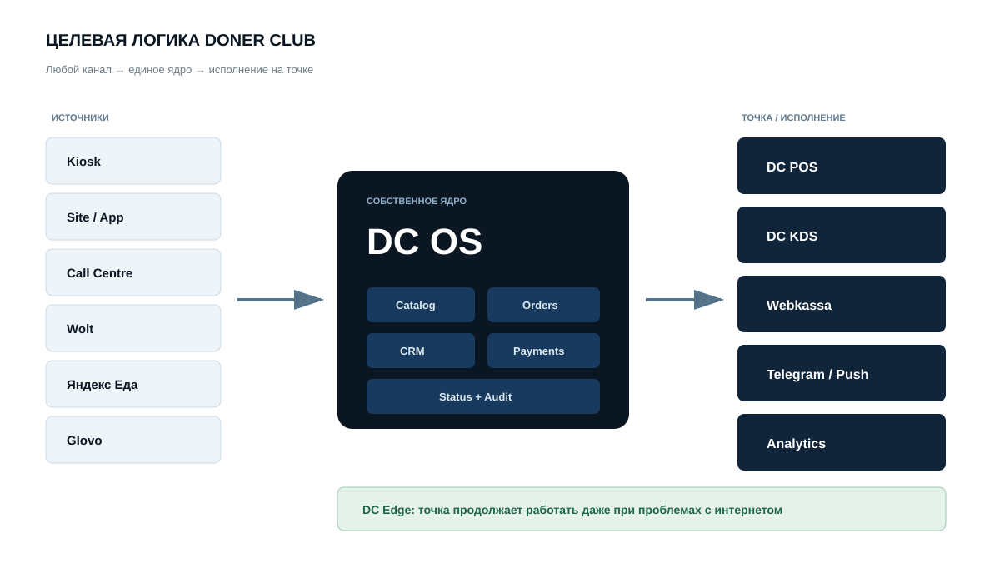
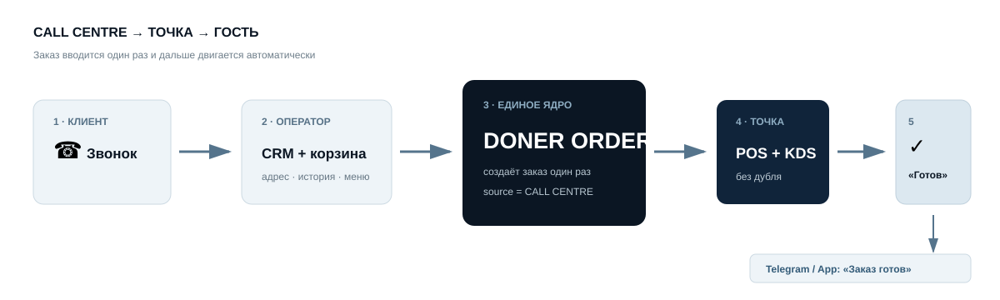
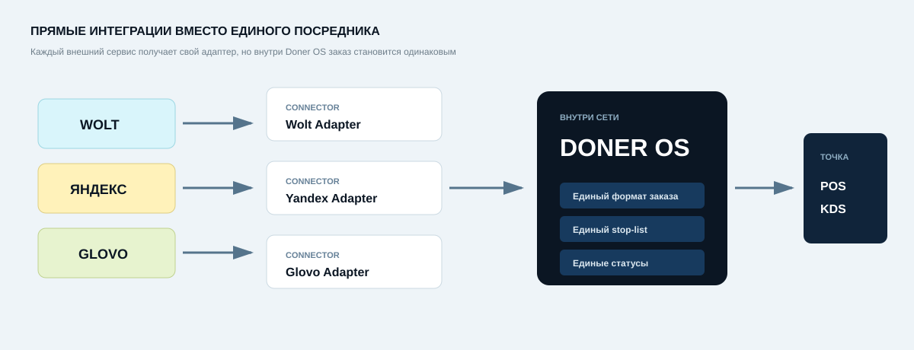
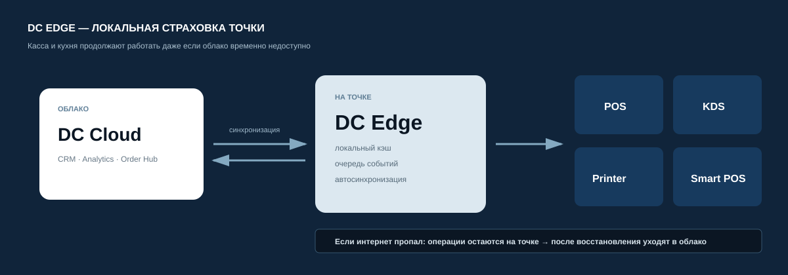

i
Сейчас это арендованный «мозг ресторана»: он знает заказ, кухню, кассу и склад.
DONER CLUB · DIGITAL STRATEGY
Как перейти от набора внешних сервисов к единой системе, в которой Doner Club сам управляет заказом, кассой, кухней, клиентом, аналитикой и интеграциями.

СНАЧАЛА ПРОСТО
Сегодня Doner Club уже владеет частью цифрового контура, но ключевые операции всё ещё зависят от iiko и Kwaaka. Стратегия — постепенно перенести центр управления внутрь Doner Club.
Сейчас это арендованный «мозг ресторана»: он знает заказ, кухню, кассу и склад.
Это «переводчик» между агрегаторами доставки и нашей ресторанной системой.
Наш собственный центр: любой заказ приходит сюда и дальше управляется уже правилами Doner Club.
ЧТО УЖЕ ЕСТЬ
Значительная часть внешнего контура уже собственная. Это снижает стоимость и риск перехода.
Собственный интерфейс, меню, модификаторы, стоп-лист, CRM, Smart POS bridge.
РаботаетКлиенты, история заказов, точки, API и PostgreSQL.
РаботаетПродажи, персонал, ревизии, каналы, отчёты и Telegram.
РаботаетМеню, профиль, корзина, точки, стоп-лист, модификаторы.
РазвиваетсяКухонные статусы Арай и Республики уже принимаются нашим backend.
ПодключеноОснова готова для уведомлений «принят / готовится / готов / выдан».
Следующий шагСЕЙЧАС VS ЦЕЛЬ
Не интерфейс ради интерфейса. Меняется владелец логики и данных.
| Область | Сейчас | Целевая модель | Эффект |
|---|---|---|---|
| Центр заказа | iiko | Doner Order Hub | Один формат для всех каналов |
| Касса | iiko POS | Doner POS | Логика под наш формат |
| Кухня | iiko KDS | Doner KDS | Простой поток: новый → готовится → готов → выдан |
| Агрегаторы | Kwaaka | Прямые connectors | Меньше посредников |
| Клиент | Данные размазаны | Doner CRM | Единая история гостя |
| Уведомления | Ручной вызов гостя | Telegram / Push | Гость подходит только когда заказ готов |
| Аналитика | Несколько источников | Doner Analytics | Свой единый слой данных |
ЦЕЛЕВАЯ АРХИТЕКТУРА
Внутри сети заказ должен выглядеть одинаково, независимо от того, пришёл он с киоска, сайта, Call Centre или агрегатора.
Меню, цены и модификаторы больше не копируются вручную между системами.
У каждого заказа единый ID, источник, состав, оплата и история статусов.
Телефон, адреса, история и предпочтения хранятся в Doner CRM.
Любое действие можно восстановить: кто, когда и что изменил.
CALL CENTRE
Оператор не должен звонить на ресторан или просить кассира вводить заказ повторно.

CRM узнаёт номер и показывает клиента.
Оператор видит актуальное меню и стоп-лист точки.
Order Hub создаёт заказ с источником CALL CENTRE.
Заказ появляется в POS/KDS без ручного дубля.
Telegram или приложение сообщает гостю о готовности.
POS + KDS
Для Doner Club задача легче, чем для универсального ресторана: самообслуживание, один чек, единая выдача.
Если в чеке донер + Pepsi + соус, весь заказ считается одной единицей выдачи. Гость получает уведомление только когда весь чек готов к выдаче.
ЗАМЕНА KWAAKA
Сложность не в «получить JSON». Нужно безопасно обрабатывать повторы, отмены, ошибки, стоп-листы и изменения API.

| Канал | Что реально сделать | Что нужно до запуска | Стратегия |
|---|---|---|---|
| Wolt | Прямой POS/Middleware connector | Credentials, sandbox, demo/pilot | Забирать напрямую |
| Яндекс Еда | Меню, стопы, заказ, статус, курьер | Onboarding и production-доступ | Забирать напрямую |
| Glovo | Адаптер технически возможен | Подтвердить доступ для Казахстана | Kwaaka пока оставить |
24/7 И OFFLINE
После отказа от iiko Doner Club сам отвечает за устойчивость. Поэтому нужен локальный Doner Edge.

ОПЛАТА И ФИСКАЛИЗАЦИЯ
Платёжный слой можно вынести в собственную систему, а фискальный чек создавать через Webkassa API.
Создаёт заказ и фиксирует итоговую сумму.
Smart POS или онлайн-карта подтверждает оплату.
Получает состав заказа и создаёт фискальный чек.
Хранится в заказе и доступен гостю.
ГДЕ НАСТОЯЩАЯ СЛОЖНОСТЬ
Настоящая ERP начинается там, где надо точно объяснить каждый килограмм сырья и каждую финансовую корректировку.
ROADMAP
Каждый новый слой сначала работает рядом со старым. Только после стабильного пилота он становится основным.
Единая модель заказа, события, idempotency, audit log, связь с CRM.
01Пилот на одной точке. iiko остаётся системой сверки.
02Оператор отправляет заказ прямо в точку, фискализация уходит из iiko.
03Операционная работа точки не зависит от постоянного облака.
04Прямые connectors после sandbox и pilot.
05Единая система на Арай, Республике и новых точках.
06Склад, закупки, техкарты, себестоимость и ревизии.
07Сроки — ориентир для планирования. Реальная скорость зависит от команды, доступов агрегаторов, платёжных и фискальных согласований.
ПЛЮСЫ И МИНУСЫ
Контроль над системой автоматически означает ответственность за её доступность.
КОНТРОЛЬ РИСКА
Новая система получает ответственность только после того, как докажет стабильность на реальных заказах.
Сначала наблюдаем и сравниваем.
Одна точка, ограниченный поток, ручная сверка.
Повторный запрос не создаёт дубль.
Любое изменение имеет автора, время и источник.
Для критичного процесса всегда есть резервный сценарий.
База и конфигурации должны восстанавливаться.
РЕКОМЕНДАЦИЯ ДЛЯ РУКОВОДСТВА
Первый стратегический продукт: Order Hub + POS + KDS + Call Centre + Webkassa + Doner Edge. Это забирает под контроль основную операционную работу, не заставляя одновременно переписывать склад и весь ERP.
Склад, сверка и резервный контур на переходном этапе.
По мере появления прямых интеграций с агрегаторами.
Заказы, точки, статусы, клиенты и операционная логика.
СЛОВАРЬ
Чтобы стратегию одинаково понимали операционный директор, управляющий, кассир и разработчик.
Программа кассира: собрать заказ, принять оплату, сделать возврат.
Экран кухни с заказами и статусами приготовления.
Правила, по которым две программы договариваются обмениваться данными.
Автоматическое сообщение системы: «у заказа что-то изменилось».
Посредник-переводчик между агрегатором и кассой. Сейчас эту роль выполняет Kwaaka.
Центральный диспетчер всех заказов Doner Club.
Склад, закупки, себестоимость, ревизии и внутренний учёт.
Локальный сервис точки, который позволяет работать при проблемах с интернетом.
Адаптер, который переводит Wolt, Яндекс или другой сервис в единый формат Doner OS.
Защита от дублей заказов и платежей.
Новая система работает рядом со старой, но пока не принимает критические решения.
Сервис, который формирует фискальный чек и передаёт данные по правилам онлайн-кассы.
ОСНОВАНИЕ СТРАТЕГИИ
Внутренняя часть основана на уже работающих проектах Doner Club. Внешние интеграции — на публичных документациях платформ.
DONER CLUB · STRATEGIC DIRECTION
Doner OS — не IT-проект ради IT. Это инфраструктура, которая делает скорость развития, качество сервиса и масштабирование сети внутренней компетенцией Doner Club.